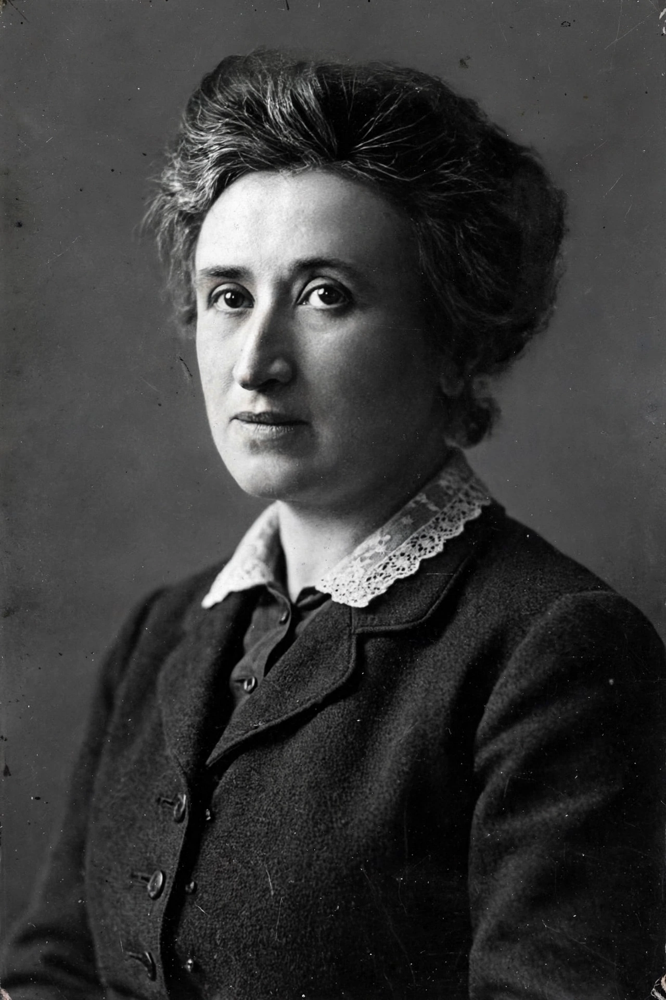

| Rosa Luxemburg | |
|---|---|
| Born | 5 March 1871, Zamość, Congress Poland, Russian Empire |
| Died | 15 January 1919 (aged 47), Berlin, Germany |
| Occupation | Economist, philosopher, revolutionary |
| Known for | The Accumulation of Capital (1913); co-founder of the Spartacus League |
| Cause of death | Murdered by Freikorps during the Spartacist uprising |
Rosa Luxemburg (5 March 1871 – 15 January 1919) was a Polish and German Marxist economist, philosopher, and revolutionary socialist. A leading theorist of the Social Democratic Party of Germany (SPD) and co-founder of the anti-war Spartacus League, she was murdered by right-wing Freikorps troops during the suppression of the German Revolution of 1918–19.
Luxemburg was born Rozalia Luksenburg in Zamość, in Russian-ruled Poland, to a Jewish family. Involved in socialist politics as a teenager, she fled to Switzerland to avoid arrest and studied at the University of Zurich, earning a doctorate in political economy in 1897 — one of the first women to do so. With Leo Jogiches she founded the Social Democracy of the Kingdom of Poland and Lithuania party.
Moving to Berlin in 1898, Luxemburg became one of the SPD's most brilliant speakers and writers. In Reform or Revolution (1900) she attacked Eduard Bernstein's revisionism, insisting that social reforms were a means, not a substitute for, revolutionary transformation. After the Russian Revolution of 1905 she championed the mass strike as the central revolutionary weapon. Her major economic work, The Accumulation of Capital (1913), argued that capitalism depends on continually absorbing non-capitalist markets and territories — a theory of imperialism debated ever since.
Luxemburg opposed the First World War and, with Karl Liebknecht, founded the Spartacus League; she spent most of the war in prison. Released during the November 1918 revolution, she co-founded the Communist Party of Germany but warned against a premature uprising. When the Spartacist uprising erupted in January 1919, government forces under Social Democratic leadership deployed the Freikorps to crush it. Luxemburg and Liebknecht were arrested on 15 January 1919, beaten, and shot; her body was thrown into Berlin's Landwehr Canal and recovered months later.
Luxemburg's insistence on democratic, spontaneous mass action — her maxim that "freedom is always the freedom of the one who thinks differently" — has made her an enduring reference point for democratic socialists critical of both reformism and Leninist authoritarianism.
See also: Spartacus League, German Revolution of 1918–19, Marxism